デザイン
デザイン
架空の水族館サイト
子ども連れの家族や友人同士で訪れる方をターゲットに、 Webデザインの学習の一環として制作した架空のWebサイトデザインです。
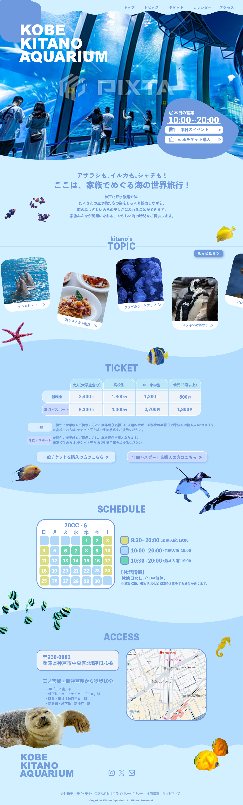
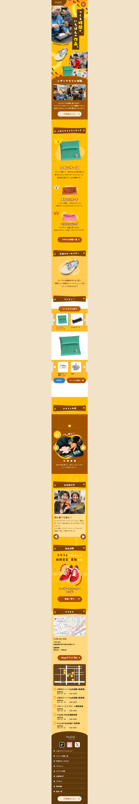
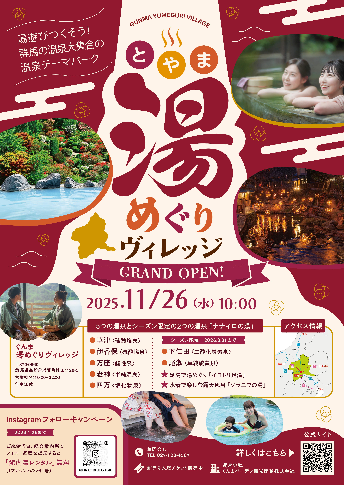
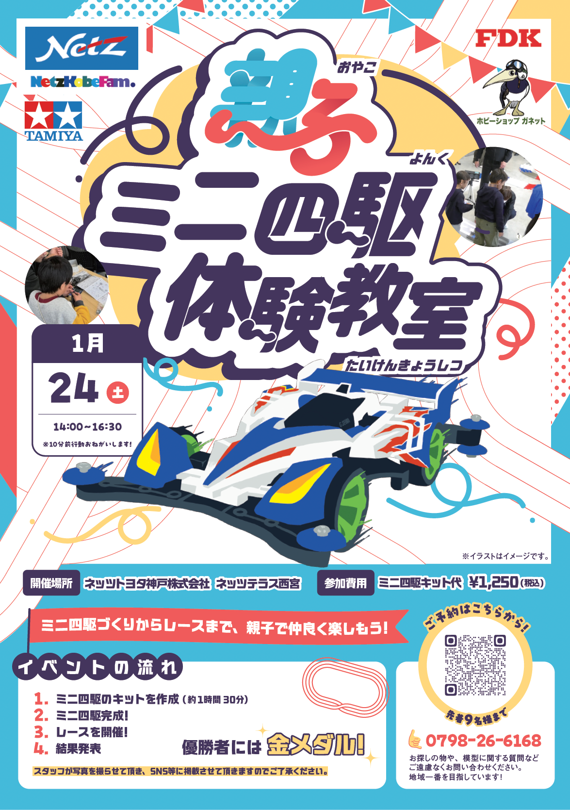
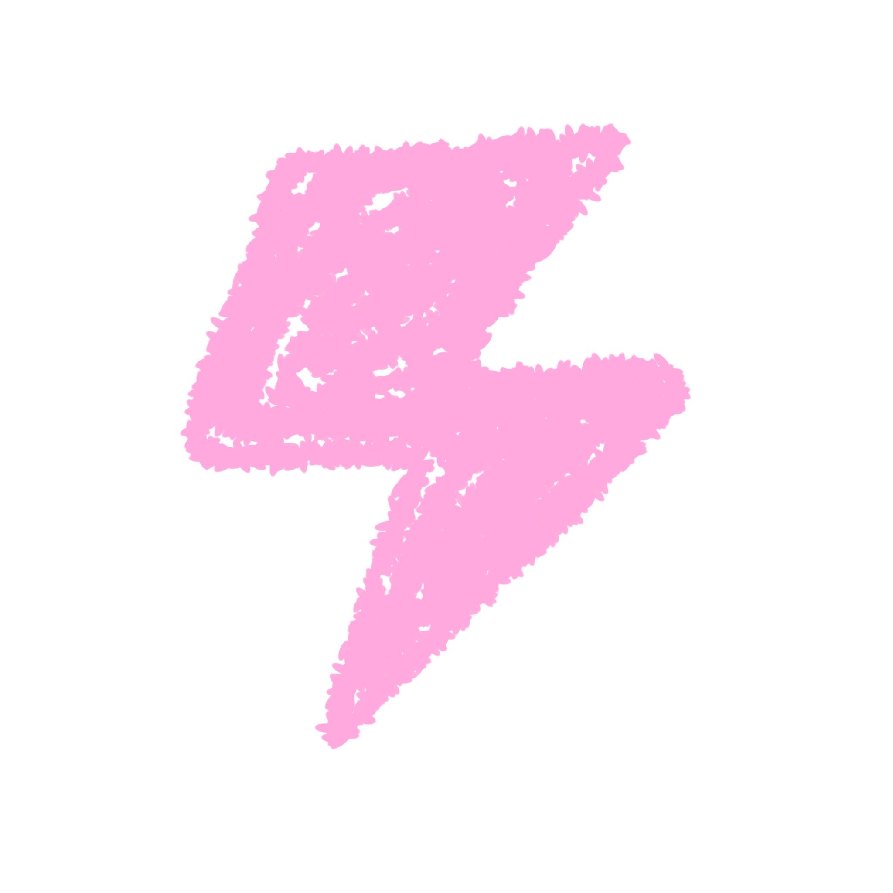
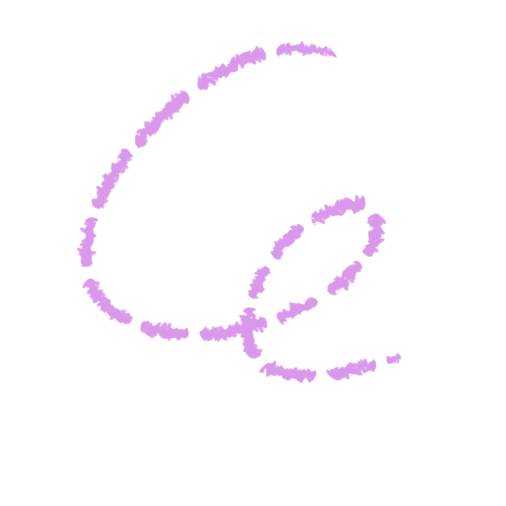
ポスター・パッケージから、Web・動画まで
幅広い表現を学び、未来のデザイナーへ
印刷・Web・動画など、
さまざまなデザインの基礎から実践まで幅広く学習。
クライアントの想いをくみ取り、
自分のアイデアをカタチにする力を身につけます。
基礎から実践へ
デザインの基本となる色・レイアウト・ typographyなどの基 礎からスタート。学んだ知識を実際の制作に活かしながら、自 然とデザイン力を身につけていきます。
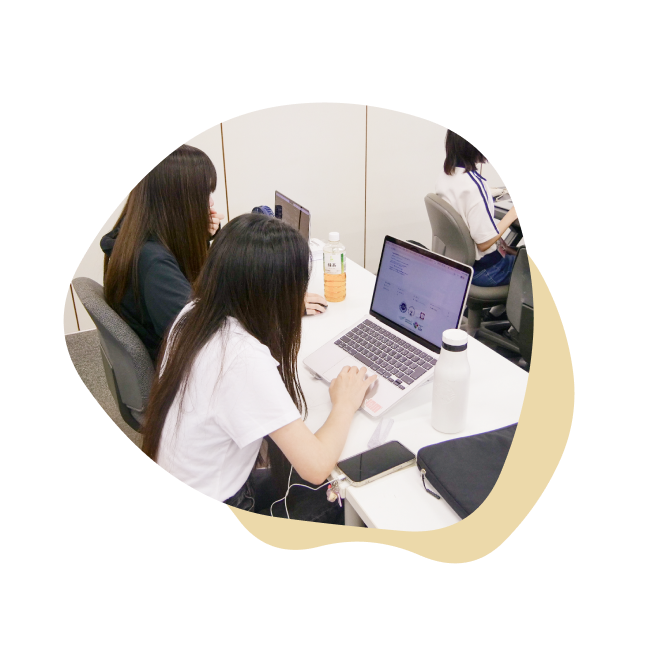
リアルな仕事を体験
実際の企業や地域と連携した制作にも取り組み、クライアント
の要望をもとにデザインを考えます。授業だけでは得られな
い、実践的な経験を積むことができます。
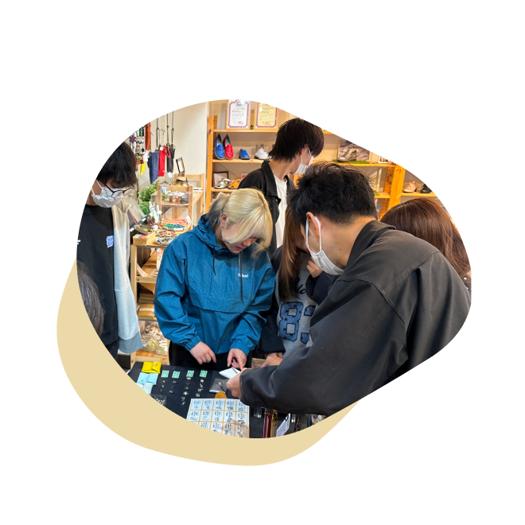
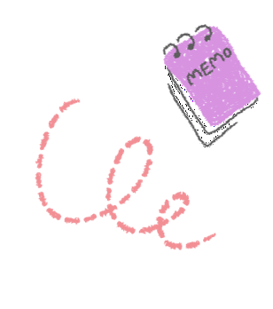
幅広いデザインを学ぶ
ポスターや冊子などのグラフィックデザインだけでなく、Web
サイトや動画制作まで幅広く学習。さまざまな媒体に対応でき
る、柔軟なデザイン力を身につけます。
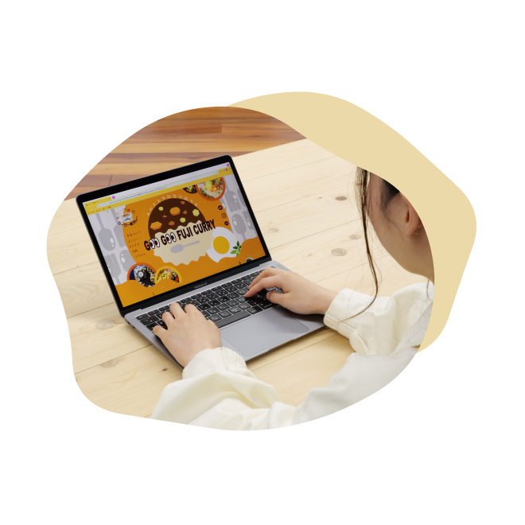
先生がしっかりサポート
デザインの現場を知る経験豊富な先生が、基礎から応用まで一
人ひとりを丁寧にサポート。制作で分からないことも相談しな
がら、自分のペースでスキルを伸ばせます。
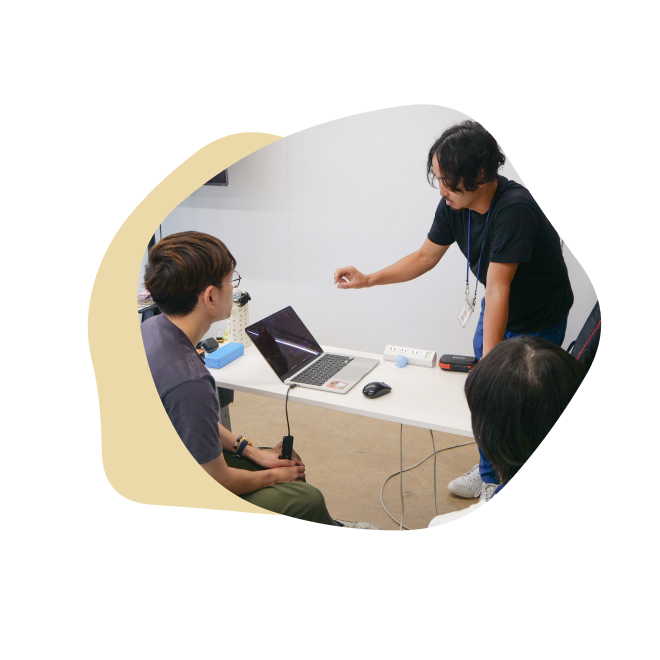
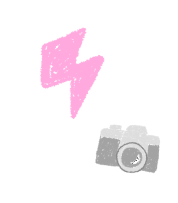
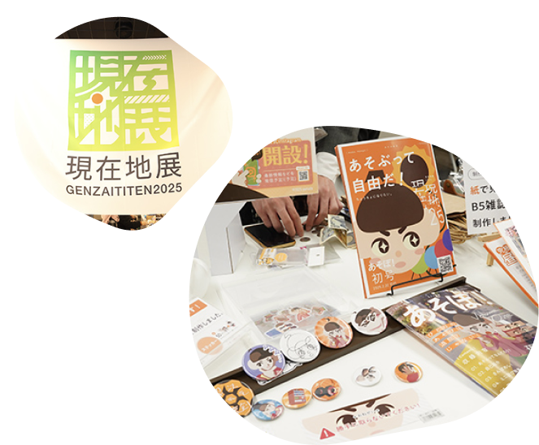
Webサイトのデザインから
HTML・CSSを使ったコーディングまで、
Web制作に必要な知識と技術を学びます。
ユーザー目線で「伝わる」Webサイトを
つくる力を身につけます。
Webサイト デザイナー
Webサイト コーダー
Webサイト UI・UXデザイナー
Webサイト ディレクター
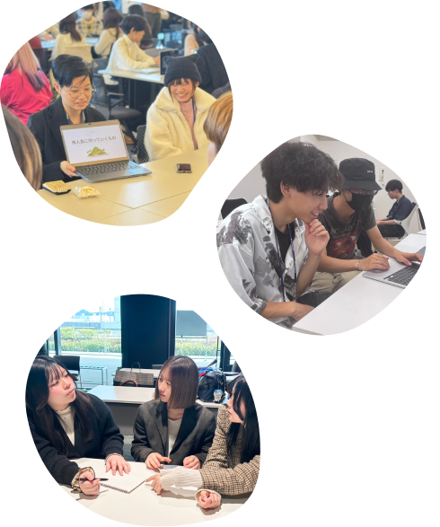
ポスターやパッケージ、冊子など、
幅広いグラフィックデザインを学びます。
色やレイアウトなどの基礎を身につけ、
想いをビジュアルで伝える力を磨きます。
グラフィックデザイナー
パッケージデザイナー
Webサイト UI・UXデザイナー
Webサイト ディレクター
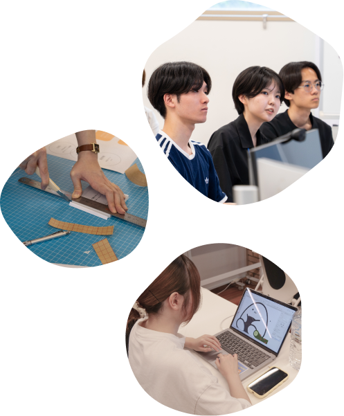
動画撮影や編集、映像表現など、
動画制作に必要な技術を学びます。
企画から制作まで幅広く経験し、
映像で魅力を伝える力を身につけます。
映像クリエイター
SNS動画クリエイター
映像ディレクター
映像編集エンジニア
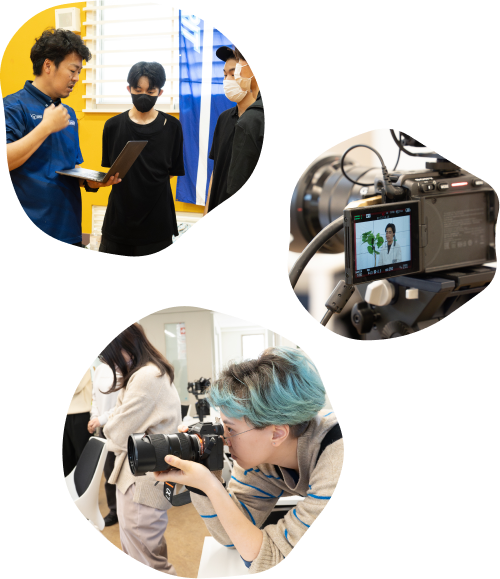
デザイン
子ども連れの家族や友人同士で訪れる方をターゲットに、 Webデザインの学習の一環として制作した架空のWebサイトデザインです。

技術的なことは入学してから十分勉強できます。初心者であっても大丈夫です。 入学前には、日頃、目にしているポスターやチラシ、パッケージデザインなど 良いデザインを気にかけてたくさん見ておくと、入学して制作をするときに いろんなアイデアが浮かびやすいですよ。
すべての学科でノートパソコンが必要ですが、学科によって必要な端末やスペックが異なります。 購入前に募集要項やオープンキャンパスで確認してください。学校の一括購入なら、 安価で手厚いサポートも受けられます。自分で購入する場合も、事前に学校へ確認しましょう。
授業では、入学時に購入したパソコン（Macbook）を使用しますので、 毎日自由に使えます。操作にも早く慣れることができますよ。 苦手な方も、一から丁寧に教えますので安心してください。
デザイン業界で一般的に使われる「Illustrator」や「Photoshop」を中心に使用します。 ※映像編集ソフト「Premiere Pro」「After Effects」も基本操作は習得します。
映像の編集や作成ができる「Premiere Pro」「After Effects」などを使用します。 ※画像編集ソフト「Photoshop」、イラスト・デザインソフト「Illustrator」も基本操作は習得します。